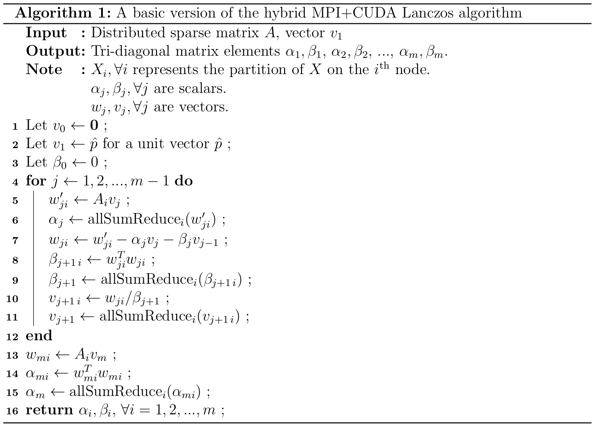

The proposal for the project may be accessed here.
Checkpoint
Progress Update
We have roughly followed the schedule that we had outlined in the project proposal. We have shown this in the table in the later sections of this report. Following is the work we have done so far.
- We have finalized the test data sets from SNAP[1]. We are using a small 6,474 node, 13,233 edge undirected graph of Autonomous Systems for quick experimentation and correctness testing. This takes < 1 minute for clustering using sequential code, making it ideal to run correctness tests. We also have a larger YouTube community graph with 1,134,890 nodes and 2,987,624 edges. This will be used to calculate the speedup w.r.t. the sequential versions.
- We spent a while to understand how the Lanczos algorithm would be implemented. We then designed strategies to implement this algorithm only on the GPU, and on the CPUs of nodes in a cluster only using MPI. We finally merged these two strategies to design a basic hybrid parallel version, distributed across nodes and GPUs.
- We have setup a test bench to run sequential versions of spectral clustering using MATLAB and numpy. We have obtained the timing for these on the small data set. The MATLAB time on Intel(R) Core(TM) i5-5300U CPU @ 2.30GHz for as20000102.txt (6,474 nodes, 13,233 edges) is 16.27 seconds.
- The MATLAB version performs K-means clustering and is used as the correctness benchmark for the Lanczos algorithm, as it is an approximate algorithm. We have chosen to divide data into 2 clusters for simplicity of testing.
- We have a basic CUDA + MPI hybrid version of the algorithm up to a certain stage†. The algorithm distributes the data across the nodes of the cluster, in the device memories of the GPUs, and performs matrix operations on these partial views of the data. We have given an overview of this in the next section.
† We have managed to parallelize the implementation up to the Lanczos stage of the algorithm. We have highlighted the issues that we are facing beyond this point in the issues section.
The Hybrid Parallel Approach
We are using the NVIDIA cuSparse [2] library for node-local matrix operations that are performed on the GPU. This allows us to focus on tuning the performance of our library across nodes, while at the same time reaping the benefits of upstream updates to the cuSparse library. The goal is to produce a working library that is practically usable, with as little maintenance overhead as possible.
Our algorithm can be broken down into three stages:
- Construction of the Graph Laplacian from the input data set and distribution across nodes.
- Parallel Lanczos algorithm to compute the tri-diagonal matrix.
- QR algorithm to compute the Eigenvectors of the tri-diagonal matrix.
Constructing the un-normalized Graph Laplacian from the distributed adjacency matrix is embarrassingly parallel. Note that even a compressed matrix representation of the adjacency matrix can be easily converted into the compressed representation of the Laplacian. We exploit this property to efficiently construct the Graph Laplacian.
The following algorithm describes the working of the naïve hybrid MPI+CUDA code that we have at this stage for the Lanczos step of the algorithm.

Even though the naïve algorithm attempts to minimize communication be performing local matrix-vector operations in parallel across nodes, on the GPUs of each of the nodes, it still suffers from multiple issues. We have highlighted these, along with other issues, in the issues section.
Current Issues
- One of the major issues we face is the parallel design of the QR algorithm as a post processing step of the Lanczos algorithm. The Lanczos algorithm constructs a tri-diagonal matrix to simplify the computation of Eigenvalues, but an algorithm like QR must be used to obtain the Eigenvectors of this tri-diagonal matrix. We had not accounted for this post-processing step in our project proposal.
- There is potential workload imbalance depending on how the Laplacian matrix L is distributed and stored. We have several strategies in mind to mitigate the issue of work load imbalance, that we intend to test in the coming weeks.
- There are potential numerical precision issues if we do not apply extra correction steps in the Lanczos algorithm. We may have to investigate correctness issues that may arise due to this.
- There seems to be a high communication overhead in the last allSumReduce operation of each Lanczos iteration, to compute vj +1. We may have to investigate ways to reduce this overhead.
Goals and Deliverables
In light of the issues that we have discovered, we have slightly refined the goals from the original proposal.
We will still have a working, correct implementation of a C++ hybrid MPI + CUDA parallel version of a Lanczos-based spectral clustering algorithm as a miniature library. We expect the clustering quality of the results produced by our algorithm to be comparable to those produced by a sequential numpy version of the algorithm. For simplicity, we are restricting ourselves to the case of discovering 2 clusters.
The previous CUDA-only implementation [3] achieved 5x speedup over a sequential MATLAB version. Pessimistically, we expect to achieve at least 5x speedup over the sequential numpy version as well, but on larger data sets (as we have more total memory and compute power available to us).
We will also compare our code with the CUDA-only parallel implementations of the Lanczos algorithm, and hope to stay competitive. We anticipate two major bottlenecks in our code: inter-node communication overhead in MPI and CUDA host memory to device memory transfer overhead. We will spend a significant amount of time optimizing and analyzing these two.
We hope to achieve at least (5 + 0.5 * number of nodes)x speedup on the two test data sets. The reason is that we expect the algorithm to scale with the number of nodes as well, providing more speedup than the 5x speedup obtained using the CUDA-only implementation. However, we anticipate non-ideal speedup and limit ourselves to a more achievable goal of 0.5 * number of nodes.
For the poster session, we will show a visualization of our speedup graphs, and discuss the parallelization approaches and trade-offs that we made. We will also show the interface to the library, the API structure and the easy of use of our code.
Revised Schedule
| Start Date | End Date | Work to be done |
|---|---|---|
| Nov 1 | Nov 5 | |
| Nov 6 | Nov 13 | |
| Nov 14 | Nov 20 | |
| Nov 21 | Nov 24 | Complete implementing the basic hybrid Lanczos by adding CUDA-aware MPI transfers. Use the small data set to run correctness tests. Implement the better data distribution strategy to counter workload imbalance. |
| Nov 25 | Nov 27 | Optimize the algorithm for large data sets. Work on Minimizing MPI/CUDA overheads. |
| Nov 28 | Dec 1 | Run benchmark tests on large data sets. Deal with QR stage of the algorithm. Find methods to perform fair evaluations. |
| Dec 1 | Dec 4 | Run tests using the fair evaluation scheme. Compute final benchmark numbers and design the graphs/visualizations to be used in the poster/writeup. |
| Dec 5 | Dec 12 | Buffer for pending tasks and tests. Write the final project report. Prepare poster for presentation. Create necessary pending visualizations. |
References
[1] Jure Leskovec and Andrej Krevl. SNAP Datasets: Stanford large network dataset collection. http://snap.stanford.edu/data, June 2014.
[2] NVIDIA cuSPARSE::CUDA Toolkit Documentation. http://docs.nvidia.com/cuda/cusparse/, Accessed: 2016-11-20.
[3] Parallel eigensolver for graph spectral analysis on gpu. http://linhr.me/15618/. Accessed: 2016-10-31.